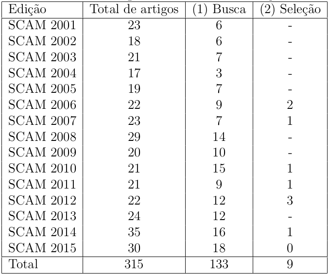
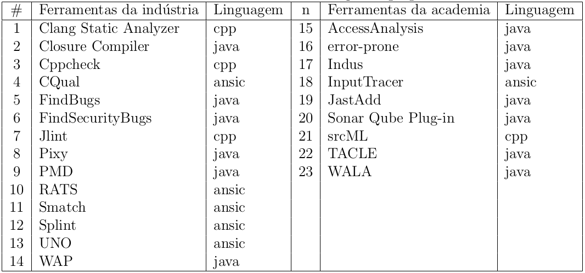
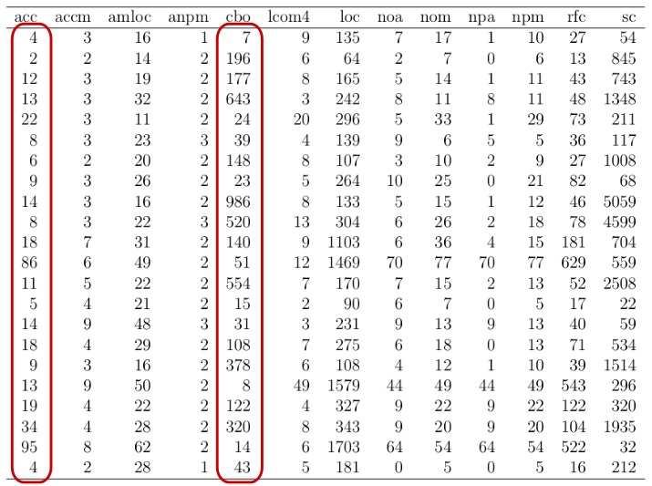
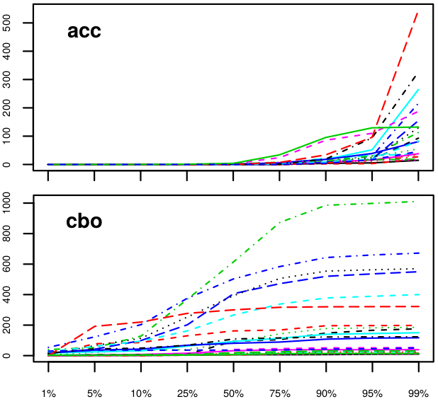

Caracterização da complexidade estrutural em ferramentas de análise estática de código-fonte
Caracterização da complexidade estrutural em ferramentas de análise estática de código-fonte
apresentação para banca de qualificação de mestrado do Programa de Pós-graduação em Ciência da Computação da Universidade Federal da Bahia
Salvador-Ba, 08 de Julho de 2016
Joenio Marques da Costa
Orientadora: Christina von Flach G. Chavez
Co-orientador: Paulo Roberto Miranda Meirelles
a tecnologia de análise estática tem se desenvolvido rapidamente, mas a comparação e avaliação de técnicas e ferramentas não tem acompanhado tal velocidade
LI, P.; CUI, B. A comparative study on software vulnerability static analysis techniques and tools. In: Information Theory and Information Security (ICITIS), 2010 IEEE International Conference on. [S.l.: s.n.], 2010. p. 521–524.
HARMAN, M. Why source code analysis and manipulation will always be important. In: Source Code Analysis and Manipulation (SCAM), 2010 10th IEEE Working Conference on. [S.l.: s.n.], 2010. p. 7–19.
Objetivo
compreender as ferramentas de software para análise estática de código-fonte do ponto de vista de sua manutenabilidade, a partir da análise de sua complexidade estrutural, discutindo quais características arquiteturais explicam seus atributos de qualidade interna
Questão de pesquisa
Q1: Como a complexidade estrutural pode ser interpretada e explicada para ferramentas de software do domı́nio de aplicação de análise estática de código-fonte?
Análise estática
análise estática de código-fonte é a atividade de obter informações acerca de um programa a partir do seu código-fonte, tem suas origens nos estudos e desenvolvimentos de compiladores
- Análise de performance
- Compreensão de programas
- Localizaçao de falhas
- Recuperação arquitetural
- Testes
CRUZ, D. d.; HENRIQUES, P. R.; PINTO, J. S. Code analysis: Past and present. 2009.
Anatomia da análise estática de código-fonte

Representação intermediária
os formatos de representação intermediárias costumam ser aplicados em fins específicos, por exemplo, a métrica de complexidade ciclomática de McCabe é calculada através de um Grafo de Fluxo de Controle
Métricas de software
uma função cujas entradas são dados de software e cuja saı́da é um valor numérico, que pode ser interpretado como o grau em que um software possui um determinado atributo que afeta sua qualidade
COMMITTEE, S. . S. E. S. et al. Ieee std 1061-1998—ieee standard for a software quality metrics methodology. IEEE Computer Society, Tech. Rep, 1998.
Métricas de código-fonte
métricas de código-fonte cobrem aspectos de tamanho, complexidade e qualidade, e podem indicar aspectos relevantes à manutenibilidade de um programa
Métricas de código-fonte coletadas
ACC, ACCM, AMLOC, ANPM, CBO, DIT, LCOM4, LOC, NOA, NOC, NOM, NPA, NPM, RFC, SC
MEIRELLES, P. R. M. Monitoramento de métricas de código-fonte em projetos de software livre. Tese (Doutorado) — Universidade de São Paulo, São Paulo, Brazil, 2013.
ACC
conexões aferentes de uma classe
mede o número de classes que acessam a classe analisada
indica acesso à atributos ou métodos
Complexidade
quanto maior a complexidade de um sistema de software, maior é o esforço para compreendê-lo, modificá-lo e evoluí-lo
Darcy, D. P. et al. The structural complexity of software: An experimental test. IEEE Transactions on Software Engineering, v. 31, n. 11, p. 982–995, Nov. 2005. ISSN 0098- 5589.
Sistemas complexos
sistemas complexos são sistemas compostos de várias partes que interagem entre si com a habilidade de gerar novas qualidades no comportamento coletivo
Mitchell, M. Complexity - A Guided Tour. [S.l.]: Oxford University Press, 2009.
Sistemas de software como sistemas complexos
a partir da sua estrutura interna sistemas de software podem ser caracterizados como um sistema complexo artificial
Complexidade estrutural
uma medida da complexidade de software calculada em termos do acoplamento (CBO) e coesão (LCOM4)
CBO
acoplamento entre objetos
mede o número classes acessadas pela classe analisada
indica acesso à atributos ou métodos
LCOM4
ausência da coesão em métodos
mede os métodos e atributos acessados dentro de uma mesma classe
calculado através dos componentes fracamente conectados de um grafo não-orientado
SC
complexidade estrutural
mede a complexidade estrutural de uma classe

Metodologia
- Seleção e caracterização de ferramentas
- Extração de métricas de código-fonte
- Análise e interpretação dos valores das métricas
- Cálculo do score de similaridade
Hipóteses
- H1: É possível calcular valores de referência de métricas de código-fonte para ferramentas de análise estática a partir de um conjunto de softwares da academia e da indústria
- H2: Ferramentas de análise estática tendem a ter uma maior complexidade estrutural do que ferramentas de outros domínios de aplicação
- H3: Dentre as ferramentas de análise estática de código-fonte, aquelas desenvolvidas na indústria apresentam uma menor complexidade estrutural
Seleção e coleta
a seleção de ferramentas será feita através de uma revisão estruturada para ferramentas da academia e de uma busca livre para ferramentas da indústria
a análise de código-fonte e coleta de suas métricas será feita de forma automatizada utilizando a ferramenta Analizo
samate.nist.gov
Revisão estruturada
um processo disciplinado para seleção de artigos a partir de critérios bem definidos com o objetivo de encontrar ferramentas de análise estática de código-fonte
Caracterização das ferramentas
- Entrada - quais tipos de arquivos podem ser carregados na ferramenta
- Lançamentos (Releases) - quantos lançamentos por ano
- Linguagens suportadas - quais linguagens de programação a ferramenta suporta
- Tecnologia - quais tecnologias são usadas para procurar erros no código
- …
NOVAK, J.; KRAJNC, A. et al. Taxonomy of static code analysis tools. In: IEEE. MIPRO, 2010 Proceedings of the 33rd International Convention. [S.l.], 2010. p. 418–422.

http://analizo.org
Terceiro, A. et al. Analizo: an extensible multi-language source code analysis and visualization toolkit. In: CBSOFT-Ferramentas. [S.l.: s.n.], 2010.
Interpretação dos valores de métricas
as métricas serão coletadas para cada módulo de cada ferramenta, uma análise exploratória nos dará um entendimento inicial sobre a natureza dos dados
Resultados preliminares
✔ 315 artigos do SCAM avaliados e 9 ferramentas selecionadas
✔ 54 ferramentas da indústria avaliadas e 14 selecionadas
✔ 23 ferramentas analisadas de forma automatizada para coleta de métricas de código-fonte
✔ início da análise exploratória dos dados
✔ evolução inicial da ferramenta Analizo
Revisão estruturada do SCAM

23 ferramentas selecionadas

Análise exploratória
Percentis da métrica ACC

Média não é representativa

|

|
Lanza e Marinescu(2006) Michele Lanza e Radu Marinescu. Object-Oriented Metrics in Practice: Using Software Metrics to Characterize, Evaluate and Improve the Design of Object-Oriented Systems. Hardcover.
Métricas ACC e CBO no percentil 90


Evolução do Analizo
em 18 de Fevereiro de 2016 lançamos, no contexto deste trabalho, a versão 1.19.0 da ferramenta Analizo
Cronograma

Obrigado!
joenio@joenio.me
Esta apresentação está disponível em:
http://joenio.me/slides/caracterizacao-analise-estatica.html
(código-fonte: http://github.com/joenio/joenio.me)

Créditos
Imagens utilizadas nesta apresentação
- http://www.flickr.com/photos/odahumanity/4290838678
Histórico de apresentações
Onde e quando esta apresentação foi realizada
- 12 Julho 2016, UFBA DCC, Salvador, prévia da qualificação